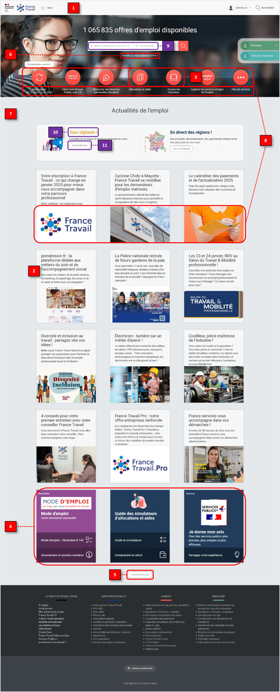

France Travail
Audit et refonte de la page d'accueil pour faciliter sa navigation.
Catégorie : Re-design non-sollicité
Période : Janvier 2025
Format : Desktop, Mobile
Contexte
France Travail est le service public de l’emploi en France qui indemnise les demandeurs d’emploi et les accompagne vers le retour à l’emploi. Cependant, malgré son caractère institutionnel, son site dédié aux candidats arbore une UI désuette, bien loin des interfaces travaillées et lissées du site du Service public et de la plupart de ses autres organismes et administrations.
Problématique
Comment moderniser la page d’accueil de France Travail à l’image de celle du Service public tout en facilitant sa navigation, mais sans dénaturer son contenu ?
Objectifs :
Réaliser une refonte de la page d’accueil de France Travail pour :
- faciliter la navigation.
- la rendre plus cohérente avec le site du Service public, ainsi que de ceux de ses différents organismes et administrations.
Ce projet a été réalisé sans accès aux analytics du site ou autres challenges rencontrés par France Travail.
Evaluation heuristique
A défaut de disposer d’un panel d’utilisateurs de la plate-forme auprès de qui mener des recherches UX, je me suis attelée à une évaluation heuristique de la page d’accueil de France Travail en me basant sur les principes d’utilisabilité de Jakob Nielsen :
Visibilité de l'état du système :
- Il n’y a pas de barre de navigation indiquant à l’utilisateur où il se situe, où quelles sont les autres parties du site vers lesquelles il peut naviguer.
- Les articles n’indiquent pas de quel type d’actualité il s’agit et vers où les utilisateurs seront menés en cliquant dessus (soit francetravail.fr/actualites, soit francetravail.fr/candidat, soit même un nouvel onglet vers un site externe).
Correspondance entre le système et le monde réel :
- Les icônes “Allocations et aide” et “Trouver ma formation” sont équivoques et peuvent semer la confusion chez l’utilisateur.
- L’emplacement et l’apparence des tuiles ”Newsletter”, “Guides des simulateurs” et “Je donne mon avis” est trompeuse, semblant indiquer qu’elles font partie de la section “Actualités de l’emploi”, ce qui peut semer la confusion chez l’utilisateur.
- L’emplacement lointain du bouton “Plus d’actualités” semble le dissocier des articles. Il devrait se situer immédiatement après les articles.
Cohérences et normes (Loi de Jakob) :
- La façon dont se comportent les liens est incohérente sur l’ensemble de la page d’accueil : “Accéder à ma recherche d’offres” est souligné au survol de la souris mais les liens sous les icônes (”M’actualiser”, “Gérer mon dossier”, etc.) ne le sont pas.
- Le Design System est radicalement différent de ceux des sites des autres organismes et administrations du Service public.
Design esthétique et minimaliste :
- La taille des illustrations d’articles en comparaison avec celle des icônes de navigation perturbe la hiérarchisation visuelle de l’information : les petites icônes de navigation (actions principales) se noient au milieu des illustrations d’articles, plus grandes et plus nombreuses.
Accessibilité
- Placeholders de la barre de recherche : Le contraste de couleurs n’est pas suffisant.
- “Tous vigilants !”: Le contraste de couleurs n’est pas suffisant (2:12).
- “En savoir plus”: L’hyperlien comporte un intitulé générique, ce qui réduit l’usabilité du site pour les utilisateurs de lecteurs d’écran.
Analyse compétitive
Si France Travail n’a pas de concurrent à proprement parler, on peut en revanche confronter son site à d’autres sites référencés dans l’annuaire des organismes et administrations du Service public afin d’en tirer les normes et bonnes pratiques :
| Sites web | 👍 Forces | 👎 Faiblesses |
|---|---|---|
| Service-public.fr |
|
- |
| Ambassade de France à Phnom Penh |
|
|
| Académie de Paris |
|
|
| Onisep |
|
|
Wireframes
Prototypes


Cohérence et uniformisation :
- La couleur dominante est le bleu, de manière semblable au site du Service Public et de la plupart et de ses autres organismes et administrations, ce qui renforce le caractère institutionnel et officiel du site de France Travail. Le bleu est aussi plus doux et moins agressif que le rouge originalement employé.
- Tous les liens se comportent de la même manière et apparaissent soulignés au survol de la souris, indiquant à l’utilisateur qu’ils sont cliquables.
Architecture de l'information :
- La barre de navigation comporte des onglets permettant à l’utilisateur de basculer aisément d’une partie du site à une autre, et de mieux se situer sur le site.
- Un carrousel permet de mettre en avant une sélection d’articles auquel l’utilisateur peut se référer s’il n’a pas le temps ou la patience de parcourir l’ensemble des articles sur la page d’accueil. Un tag permet également de déterminer en un coup d’œil la catégorie d’article dont il s’agit.
- Les articles sur la page d’accueil sont répartis par catégorie que l’on distingue facilement à l’aide de grands titres (”Actualités”, “Evénements” et “Dossiers”) et sont au nombre de 3 à 4 par catégorie afin de limiter la charge cognitive de l’utilisateur.
- La taille réduite des illustrations d’articles permet de ne pas éclipser les boutons de la section “Service Candidat” (actions principales).
- La newsletter dispose de sa propre section (”Mode d’Emploi, le mag”), ce qui évite de la confondre avec les autres articles. De même, le guide des simulateurs d’allocations et aides dispose de son propre bouton dans “Services Candidat”, tandis que “Je donne mon avis” se situe désormais dans le footer.
Accessibilité :
- Les placeholders des barres de recherche ont un contraste de couleurs suffisamment élevé avec le fond de manière à ce qu’ils soient visibles par un maximum d’utilisateurs.
- Les boutons “Voir tout” sont nommés de telle manière que les lecteurs d’écran puissent guider tous les utilisateurs correctement et efficacement. Leur contraste de couleurs est également suffisamment élevé de manière à ce qu’ils soient visibles par un maximum d’utilisateurs.